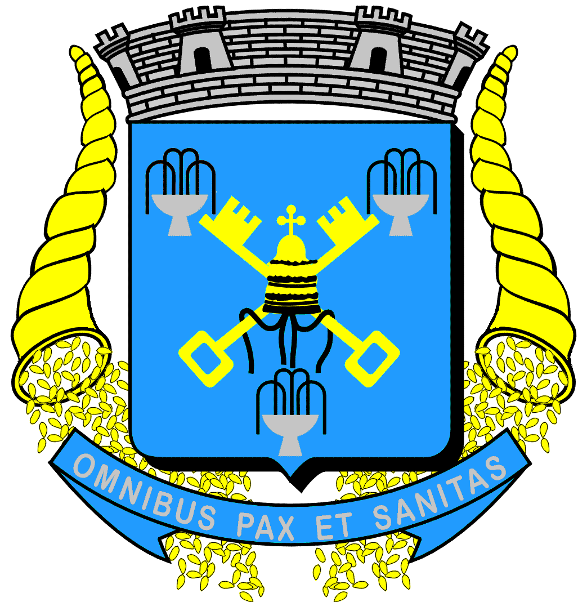

Águas de São Pedro

Unidos cantemos
com fé e ardor
Nossa terra saudemos
Com este hino de amor
Tu tens a beleza
das serras e os montes
e tens a riqueza
das tuas fontes
Tuas águas são verdes
da cor da esperança
teu céu azulado
inspira confiança
Águas de São Pedro
só tu entre mil
és orgulho do Brasil
Nesta cadência
de bons soldados
em continência
ao berço amado
todos clamados
a deus por ti
Águas de São Pedro
só tu entre mil
és o orgulho do Brasil.